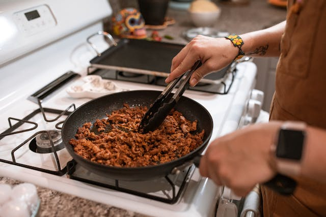

Home
Soy Sauce Ground Beef

Description
Create nutritious and delicious soy sauce ground beef whith the below ingredients
and instructions. This meal is low in fat and high in protein!
Ingredients
- 1 lb of lean ground beef
- soy sauce
- seasoning salt
- olive oil
- lemon
- zucchini
Steps
- set a large non-stick pan to medium heat on a stovetop
- while the pan is heating, slice the zucchini into 1/4" slices
- apply a light layer of olive oil to the base of the pan
- add the sliced zucchini and ground beef to the pan
- add seasoning salt to the zucchini and beef, ensuring good coverage
- apply soy sauce to the pan, letting it cook into the beef and zucchini
- let zucchini and beef brown before flipping
- check that the beef is at least 165 degrees internally with a meat thermometer
- pour zucchini onto plate with beef and serve
- enjoy!